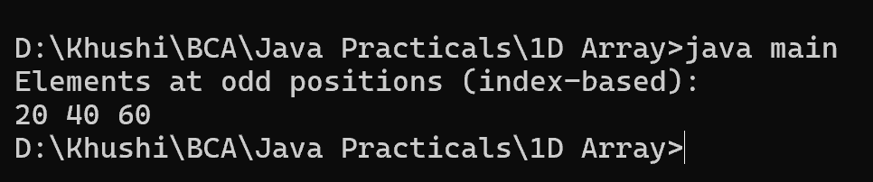

8. Program to print the elements of an array present on odd position
class main {
public static void main(String[] args) {
int[] array = {10, 20, 30, 40, 50, 60, 70};
System.out.println("Elements at odd positions (index-based):");
for (int i = 1; i < array.length; i += 2) {
System.out.print(array[i] + " ");
}
}
}
